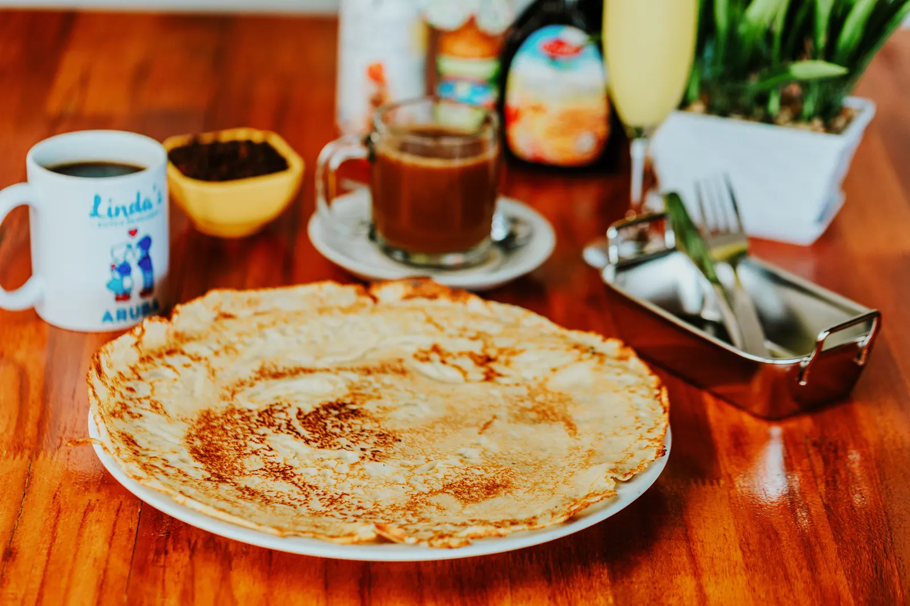
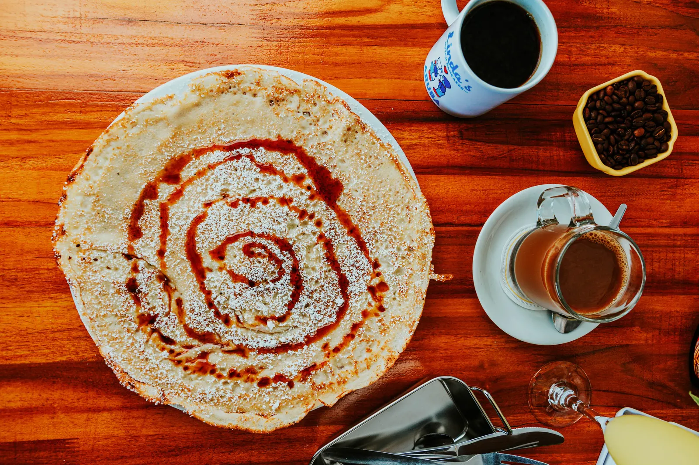
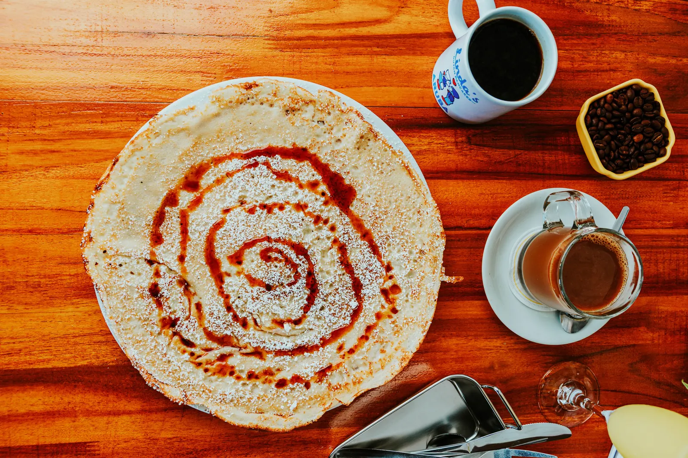

Heating the pan…
Every pancake
starts simple
Scroll to make one
Step 1
We start with simple ingredients
Flour, eggs and milk. That's where it starts.
Step 2
Fresh eggs, cracked by hand
Step 3
A good splash of milk
Step 4
Whisked into our homemade batter
Made fresh in our kitchen.
Step 5
Bacon and apple, sizzling in the pan
Cooked right in, the Dutch way.
Step 6
The batter goes right on top
Step 7
Golden, with crispy edges
Step 9
Onto our big white plate

We start with simple ingredients

Golden, with crispy edges

Cooked with love and served with a smile